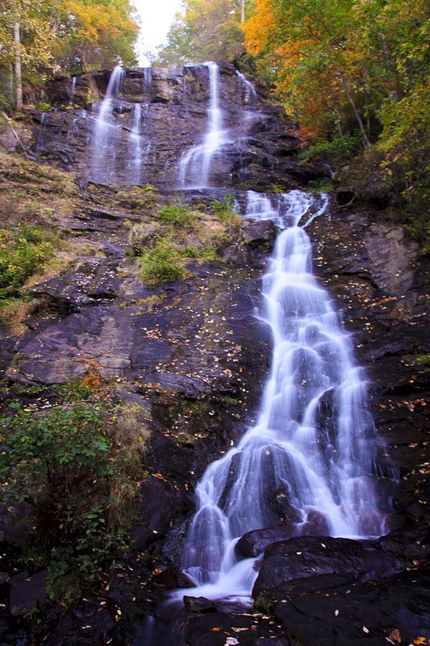

Adventure Activities or Adventure Based Learning can be a great learning and bonding opportunities for teams and can be arranged to enhance Trust, confidence, Courage and risk taking ability of the teams. ATA Adventure club caters to Hiking, Trekking Adventure and Outdoor Adventure Activities all over Georgia. We also conduct Trekking, Hiking, Camping, and Adventure sports like Rappelling, Paragliding, Skiing and White Water Rafting. Take part in Outdoor Adventures, trekking, hiking and camping with like minded people.
Register below for free and start the Adventure!
| PICTURES | ATA ADVENTURE EVENTS |
|---|---|
| CLIMB STONE MOUNTAIN AND HIKE THE CHEROKEE TRAIL Combine two Stone Mountain hiking trails, the Walk Up Trail and Cherokee Trail, trekking to the Stone Mountain summit and then around its scenic bas Thursday April 23rd 2015 1PM |
|
| CATALOOCHEE SKI TRIP Join us on this popular series of Friday trips to North Carolina. We depart at 5 a.m. for the four hour drive, ski all day and return to Atlanta at 9 p.m. The fee covers transportation, lift ticket and ski rental. Beginner lessons are an additional $10. Ski jackets and pants can be rented at the resort. Monday April 28th 2015 5AM |
|
|  | AMICALOLA WATERFALLS TREK Hiking along the rim, down in and back out to view formations that mimic Grand Canyon, Bryce and Zion National Parks. Friday May 3rd 2015 8AM |
| TALLULAH GEORGE Descend from the north rim into the 1,000 ft. deep gorge. Discover a suspension bridge swaying 80 feet from the bottom. Hike along the rim and into the gorge of the 1,200 ft. deep. Friday May 6th 2015 8AM |